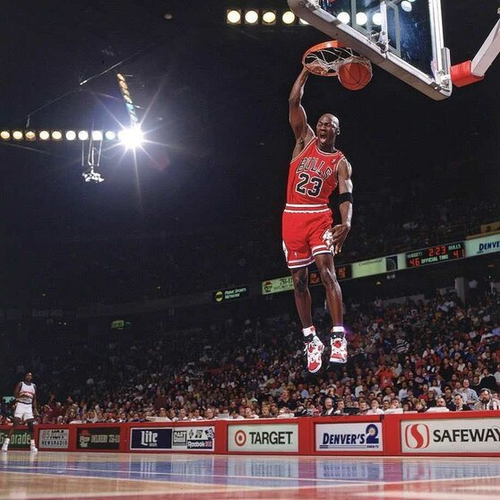
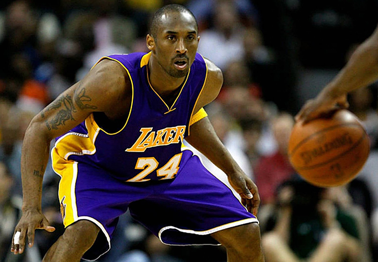

Inicio
Bienvenido a BasketAlex, tu destino principal para todo lo relacionado con el baloncesto. Aquí encontrarás historia, noticias actualizadas, estadísticas de jugadores y mucho más.
Historia
El baloncesto fue inventado en 1891 por James Naismith en Springfield, Massachusetts. Desde entonces, ha evolucionado hasta convertirse en uno de los deportes más populares del mundo.
En Ecuador, el baloncesto ha crecido con ligas como la Liga Nacional Masculina. Se practica tanto a nivel recreativo como competitivo en muchas provincias.
Noticias
- 🏀 Warriors lideran la conferencia oeste en la NBA 2025.
- 🇪🇨 Ecuador alista su selección Sub-17 para el Sudamericano.
- 🔥 Steph Curry anota 50 puntos en el inicio de temporada.
- 📊 Nueva tecnología para medir rendimiento llega a Ecuador.
Estadísticas
- 🏆 Michael Jordan: 6 campeonatos, 30.1 pts/juego.
- 📈 LeBron James: +39,000 puntos, líder histórico.
- ⏱️ Steph Curry: +3,500 triples, récord histórico.
- 🎯 Andrés Zurita: 18.5 pts/juego, Liga Nacional 2024.